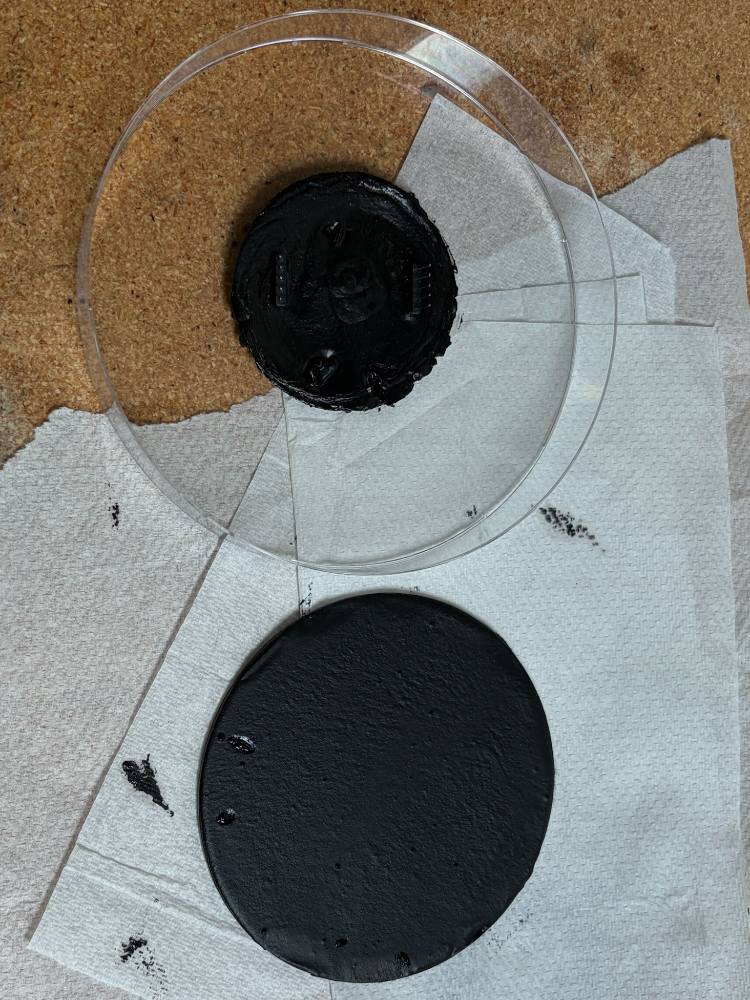
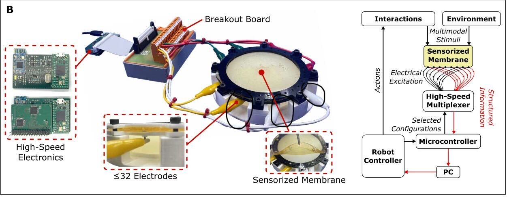
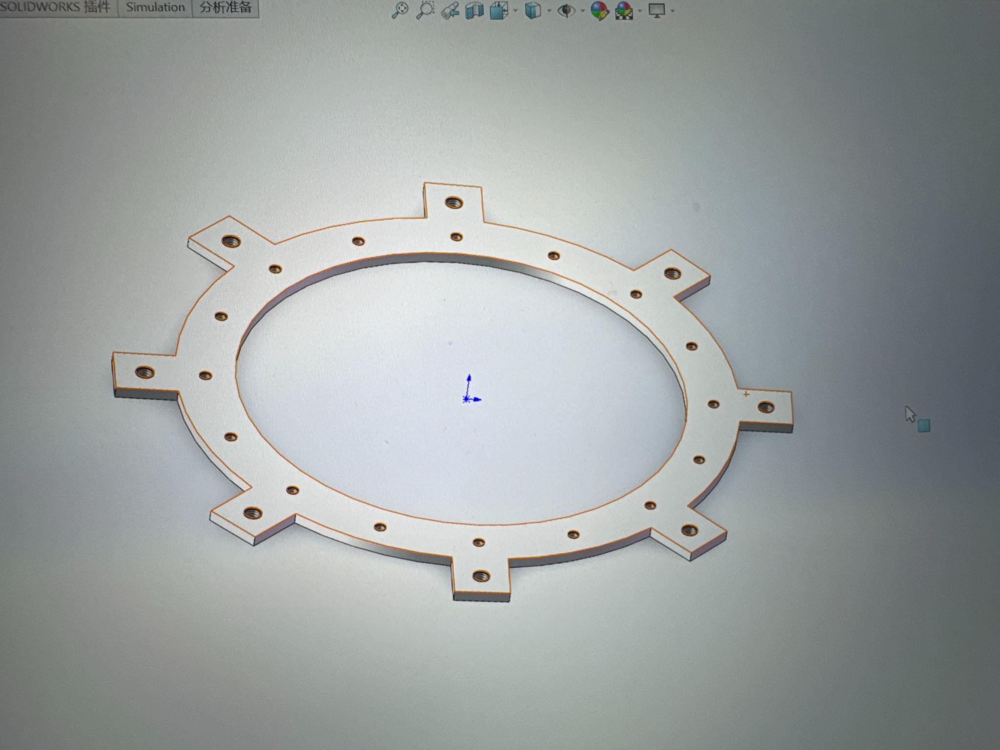

02
Quadruped Robot
Designed a scaled chassis and articulated legs in SolidWorks, optimized parts for FDM, then assembled and validated joint motion.
MECHANICAL ENGINEER · ROBOTICS HARDWARE
USC M.S. student translating mechanical design, embedded control, and hands-on testing into working robotic systems.

FEATURED RESEARCH / 2026–PRESENT
Developing scalable tactile sensors that reconstruct contact location and force distribution through electrical impedance tomography.
Formulated carbon-black / EcoFlex conductive composites and evaluated solvents for dispersion stability.
Designed PET electrode patterns in AutoCAD and fabricated them with CNC laser cutting.
Built Abaqus models and compared simulated deformation with physical experiments.


SELECTED ENGINEERING WORK
Designed a scaled chassis and articulated legs in SolidWorks, optimized parts for FDM, then assembled and validated joint motion.
Designed a spring-powered torpedo launcher, supported full-vehicle CAD integration, and corrected underwater instability through ballast testing.
Developed STM32 control logic with speed-compensated look-ahead steering for a figure-eight track. The team placed 4th in the course competition.
Built Python image-processing automation for fluorescence microscopy and point-spread-function analysis.
ABOUT
I am pursuing an M.S. in Mechanical Engineering at the University of Southern California. My work centers on robotics hardware, mechatronics, sensing, and rapid prototyping. I enjoy solving the integration problems that appear when a digital design meets real materials, actuators, and test conditions.
SolidWorks
AutoCAD
DfAM
Motion Simulation
FDM Printing
CNC Laser Cutting
Rapid Prototyping
Assembly & Testing
STM32 / C
Arduino
Python / MATLAB
Sensor Integration
LET'S BUILD SOMETHING REAL